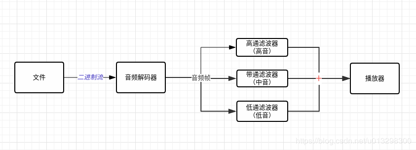

在Qt中实现数字音频均衡器
Qt实现数字音频均衡器
在实现音频播放器的时候，我们常常需要一个均衡器来调节各个频段的增益，就是我们平常说的调重低音。一个数字均衡器的架构通常都如图所示：

从图中可以看到，这里的数字均衡器实际上就是三个滤波器，各个滤波器分别负责不同频段的音频调节，这三个滤波器叫做滤波器组。当然一个数字滤波器组也不一定只有三个滤波器，理论上来说可以有任意多个滤波器，而且滤波器越多，能调整的也就越精细。
从物理上来说人类听觉的频率范围在0~20kHZ这个范围，于是我们定义三个频段：[0,Hz 400Hz], [400, 2000HZ], [2000Hz, 无穷]，分别为低音，中音和高音。于是我们只需要设计出来一个[0, 400Hz]的低通滤波器，一个[400, 2000Hz]的带通滤波器，以及一个[2000Hz，无穷]的高通滤波器就可以组成一个均衡器了。当然本文并不是讨论如何设计滤波器的，这是一个复杂的数学推导过程，有兴趣的可以来信探讨。另外，我已经设计好了这三个滤波器，文末会附上代码。
好了，现在我们有了思路了，来看看如何在Qt中实现这个想法。首先最重要的是提供这个滤波器组，一个滤波器组大概长这样：
class EQFilterGroup
{
public:
/*参数： 低音增益， 中音增益， 高音增益*/
EQFilterGroup(float const lowGain, float const midGain, float const highGain);
/*setter and getter here*/
virtual QBuffer* filter(QAudioBuffer const& buffer);
}
这个类提供一个接口，这个接口输入一个音频帧(QBuffer)，然后输出滤波后的音频帧。
然后我们看一下Qt中如何播放一个音频流：
QFile sourceFile;
QAudioOutput *audio = new QAudioOutput(this);
sourceFile.setFileName("/tmp/test.raw");
sourceFile.open(QIODevice::ReadOnly);
QAudioFormat format;
format.setSampleRate(8000);
format.setChannelCount(1);
format.setSampleSize(8);
format.setCodec("audio/pcm");
format.setByteOrder(QAudioFormat::LittleEndian);
format.setSampleType(QAudioFormat::UnSignedInt);
QAudioDeviceInfo info(QAudioDeviceInfo::defaultOutputDevice());
if (!info.isFormatSupported(format)) {
qWarning() << "Raw audio format not supported by backend, cannot play audio.";
return;
}
audio = new QAudioOutput(format, this);
audio->start(&sourceFile);
其实非常简单，只需要给QAudioOutput这个组件设置好播放的音频格式参数，然后提供一个音频流就可以播放这个音频流了，在Qt里面所有的数据流都被抽象称为了QIODevice, 当然音频流也不例外，代码片段中的sourceFile就是一个音频文件数据流，它是QIODevice的子类。
于是现在的问题是： 我们如何将EQFilterGroup整合到上述代码当中？如果我们能把滤波器组伪装成一个像上面代码里sourceFile的文件一样就好了，那么QAudioOutput就可以直接读取滤波器组滤波后的数据流了。这里我们可以使用适配器模式来帮助我们完成这一个伪装。根据适配器模式的做法，我们只需要继承QIODevice然后实现对应的接口并且集成EQFilterGroup的滤波功能就可以实现一个可以滤波的QIODevice 了。大概代码如下：
class AudioBufferDevice : public QIODevice
{
Q_OBJECT
public:
explicit AudioBufferDevice(QAudioDecoder *decoder, EQFilterGroup* filter, QObject *parent = nullptr);
virtual bool atEnd() const override;
virtual qint64 bytesAvailable() const override;
protected:
virtual qint64 readData(char* data, qint64 size) override;
virtual qint64 writeData(const char *data, qint64 maxSize);
private:
QAudioDecoder* _decoder;
QQueue<QBuffer*> _queue;
QQueue<QAudioBuffer*> _abuffer_queue;
EQFilterGroup* _filter;
bool _isFinished;
};
由于我们需要播放的是mp3文件，所以我们首先要通过QAudioDecoder来将mp3文件解码成音频帧，然后将音频帧输入滤波器组，滤波器组将滤波后的音频帧写入一个FIFO缓冲区内，并且通过QIODevice::readData接口向外界提供这些滤波后音频帧的数据流。当然，出于性能考虑，从QAudioDecoder解码到EQFilterGroup将滤波后数据写入缓冲池这一个过程也可以放入另一个线程中进行。
这样完成了上述的类之后，我们就可以实现一个低音炮播放器了：
EQFilterGroup* filter = new EQFilterGroup(2.0, 0.5, 0.5); //放大低音2倍, 中音高音弱化为1/2
QAudioDecoder* decoder = new QAudioDecoder(this);
decoder->setSourceFilename("/tmp/test.raw");
QAudioFormat format;
format.setSampleRate(8000);
format.setChannelCount(1);
format.setSampleSize(8);
format.setCodec("audio/pcm");
format.setByteOrder(QAudioFormat::LittleEndian);
format.setSampleType(QAudioFormat::UnSignedInt);
decoder->setAudioFormat(format);
QIODevice *device = new AudioBufferDevice(decoder, filter);
device->open(QIODevice::ReadOnly);
QAudioOutput *audio = new QAudioOutput(this);
QAudioDeviceInfo info(QAudioDeviceInfo::defaultOutputDevice());
if (!info.isFormatSupported(format)) {
qWarning() << "Raw audio format not supported by backend, cannot play audio.";
return;
}
audio = new QAudioOutput(format, this);
audio->start(device);
以上就是在Qt中实现数字音频均衡器的全部啦，完整的代码在这里Qt实现数字音频均衡器